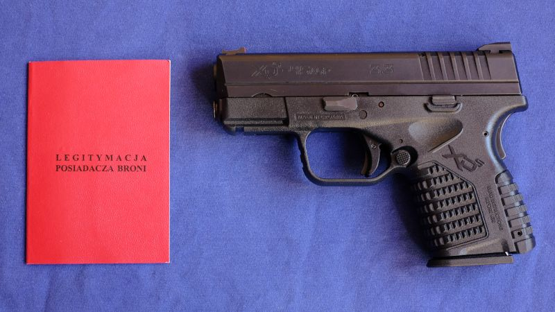

Spełniłeś wszystkie warunki oraz wykonałeś niezbędne kroki w kierunku posiadania broni palnej. Teraz pozostało ci tylko wskoczyć do paszczy lwa, czyli wreszcie złożyć na Policji podanie o pozwolenie na broń.
WPA to skrót od Wydział Postępowań Administracyjnych. Jest to wydział Policji, który zajmuje się - jak sama nazwa wskazuje - szeroko rozumianą papierologią. Na co dzień nikt nie posługuje się jego pełną nazwą, w mowie potocznej funkcjonuje tylko skrótowiec Wu-Pe-A
. To właśnie tam złożysz podanie o pozwolenie na broń.
Właściwy dla ciebie Wydział Postępowań Administracyjnych jest w twoim mieście wojewódzkim. Jeśli mieszkasz na prowincji, to nie martw się - nie ma obowiązku osobistego stawiennictwa, więc wszystkie sprawy urzędowe możesz załatwiać korespondencyjnie, listem poleconym.
Wśród strzelców, WPA ma opinię betonowego, komunistycznego urzędu z poprzedniej epoki, pełnego nieżyczliwych, złośliwych funkcjonariuszy. Prawdę mówiąc, ta opinia ma całkiem mocne podstawy ale trzeba pamiętać, że uogólnienia zawsze są w jakimś stopniu krzywdzące. W WPA spotkasz zarówno biurwy rodem z filmów Stanisława Barei, jak i miłych, pomocnych ludzi. Nie nastawiaj się więc z góry negatywnie.
Napisz i złóż w WPA podanie o nadanie ci trzech uprawnień, które już omówiłem w artykule pod tytułem Twój prywatny arsenał. Są to:
Nie składasz trzech osobnych podań, wystarczy jedno zbiorcze. Zachęcam cię do napisania podania samodzielnie. Ale jeśli pisanie podań nie jest twoją mocną stroną (a na 99% nie jest) to przygotowałem wzór podania o pozwolenie na broń, bardzo podobny do tego, które sam złożyłem. Podobne wzory podań znajdziesz w internecie na stronach klubów strzeleckich, a nawet na stronach niektórych WPA.
Nie ma większego znaczenia, który wzór wybierzesz, bo i tak nikt tych wypracowań zbyt uważnie nie czyta. Z mojego wywiadu telefonicznego w kilku różnych WPA wynika, że nikt tam specjalnie nie przejmuje się formą podania. Dla WPA liczy się wyłącznie konkretna treść: co chcesz uzyskać, oraz dowody na to, że spełniasz wymogi ustawowe. To, czym ozdobisz ten rdzeń, ma dużo mniejsze znaczenie niż się powszechnie sądzi. Nie ma więc sensu, żebyś wysilał się na jakieś kwieciste uzasadnienia, bo to i tak nie będzie miało wpływu na decyzję komendanta. Tutaj zdecydowanie preferowany jest zwięzły styl.
Warunkiem rozpatrzenia podania o pozwolenie na broń jest wniesienie absurdalnie wysokiej opłaty skarbowej. W przypadku pozwolenia na broń jest to 242 złote, zaś w przypadku dopuszczenia do posiadania broni - 10 złotych. Składasz podanie o dwa pozwolenia oraz dopuszczenie, zatem musisz zapłacić 494 złote. Nie płacisz gotówką w WPA, tylko przelewem na konto, załączając do podania bankowe potwierdzenie przelewu. Właściwy numer konta znajdziesz na stronie swojego WPA.
W Polsce, każde pozwolenie na broń określa liczbę egzemplarzy tejże, do posiadania której uprawnia. Liczba ta może być różna. Jeden ma pozwolenie na trzy sztuki broni, inny - na trzydzieści trzy. Niestety, Policja ma swobodę w ocenie tego ile egzemplarzy broni potrzebujesz i niewiele możesz na to poradzić. Ale niewiele to wciąż więcej niż nic!
Na chłopski rozum, powinieneś dostać zgodę na posiadanie sześciu sztuk broni sportowej. Po jednym egzemplarzu każdego przewidzianego ustawowo rodzaju, czyli: pistolet i karabin bocznego zapłonu, pistolet i karabin centralnego zapłonu, strzelba, broń czarnoprochowa. Razem sześć. Choć tej ostatniej, czarnoprochowej, teoretycznie możesz sobie zażyczyć trzy sztuki: pistolet, karabin i strzelbę. Czyli w sumie osiem sztuk broni. Wątpliwe jest jednak, żeby w WPA bez walki zaakceptowali takie żądanie. W praktyce mogą kręcić nosem nawet na to pierwsze, podstawowe wyliczenie sześciu sztuk.
W czasie gdy składałem swoje podanie, w moim WPA obowiązywał algorytm według którego jedna sztuka broni sportowej musi być uzasadniona przynajmniej dwoma startami w zawodach wymagających danego rodzaju broni. Ludzie bez startów w zawodach dostawali zgodę na trzy lub cztery sztuki broni sportowej, zależnie od humoru komendanta. Ale to było w 2017 roku. Obecnie większość ludzi we Wrocławiu z marszu dostaje zgodę na pięć sztuk broni sportowej. Chyba, że ktoś ma jakiś grubszy dorobek sportowy, wówczas może liczyć na więcej. W innych WPA jest podobnie.
Ja wnioskowałem pierwotnie o osiem sztuk broni sportowej, uzasadniając to swoim bogatym zbiorem startów w zawodach. Ostatecznie zaproponowano mi sześć sztuk. Propozycję tę przyjąłem.
Nie traktuj jednak powyższego jako uniwersalny pewnik. Każde WPA ma swoje odrębne reguły, na domiar złego, zmieniające się zależnie od fazy księżyca, kierunku wiatru i zagęszczenia plam na słońcu. Najważniejsze to zapamiętać, że w przypadku pozwolenia sportowego, najmocniejszą kartą przetargową jest liczba startów w zawodach. Im więcej startów w różnych konkurencjach - tym więcej wnioskowanych sztuk broni WPA zaakceptuje.
Pamiętaj też, że brak jakichkolwiek startów w zawodach nie może być i nie będzie podstawą do odmowy wydania pozwolenia na broń sportową. Ustawa o broni i amunicji precyzyjnie definiuje warunki uzyskania pozwolenia do celów sportowych. Wśród tych warunków nie ma konieczności startów w zawodach. Przy braku startów, pozwolenie sportowe i tak dostaniesz, co najwyżej na mniejszą liczbę sztuk broni.
Tutaj jest o tyle prościej, że trudno oczekiwać wykazania zaangażowania w kolekcjonerstwo broni od kogoś, kto nie ma jeszcze pozwolenia na jej posiadanie. W związku z tym, większość ludzi bez problemu dostaje zgodę na dziesięć sztuk broni do celów kolekcjonerskich. Nie musisz jakoś szczególnie uzasadniać tej liczby, wystarczy jedno zdanie, tak jak w przykładowym wzorze podania.
To jasne, że lepiej mieć pozwolenie na więcej niż na mniej. Jeśli jednak policja nie chce ci dać pozwolenia na tyle sztuk broni ile sobie wyliczyłeś, to nie przejmuj się tym za bardzo. Doceniam twoje harde serce i wolę walki o swoje prawa, zwłaszcza, że taka walka w pewnych granicach rozsądku ma sens, ale weź jednak pod uwagę realia.
Spokojnie dostaniesz pozwolenie na kilkanaście sztuk broni: dziesięć sztuk do celów kolekcjonerskich i kilka sztuk do celów sportowych. To wbrew pozorom bardzo dużo. Większość typowych sejfów nie pomieści takiego arsenału. Biorąc pod uwagę cenę broni (kilka tysięcy złotych za sztukę) mało kogo też stać na taki jednorazowy duży zakup, więc i tak minie co najmniej kilka lat zanim wypełnisz ten limit. Zatem czy naprawdę jest o co walczyć? Moim zdaniem lepiej dostać pozwolenie szybciej niż przepychać się z WPA wymyślanymi na siłę argumentami.
W razie potrzeby, rozszerzenie liczby sztuk broni na pozwoleniu jest stosunkowo łatwe. W niedalekiej przyszłości o tym napiszę.
Można tu co prawda podnieść kwestię noszenia broni: wszak nosić przy sobie załadowaną będziesz tylko broń sportową, bo kolekcjonerskiej nie wolno; a przecież pozwolenie na broń sportową opiewa na jedynie kilka sztuk. Ale powiedz szczerze: jaką broń chcesz nosić codziennie? Zapewne jakiś mały pistolet lub rewolwer, bo przecież nie strzelbę. Nadającej się do noszenia broni krótkiej będziesz miał w najlepszym razie kilka sztuk, co spokojnie zmieści się w ramach pozwolenia sportowego.
Resztę broni - karabiny i strzelby - możesz zarejestrować na pozwolenie kolekcjonerskie. Co prawda to wyklucza jej noszenie, ale zgódźmy się: jeśli faktycznie masz potrzebę noszenia przy sobie załadowanego karabinu to znaczy, że właśnie trwa wojna. A w czasie wojny i tak masz w dupie wszelkie przepisy dotyczące noszenia czy nawet posiadania broni.
Kiedyś wydawano pozwolenia z tak zwanym podziałem. To znaczy, że gdy dostawałeś pozwolenie na pięć sztuk broni palnej, to było wyszczególnione, że w tej piątce są przykładowo: dwie sztuki centralnego zapłonu, dwie bocznego zapłonu i jedna gładkolufowa. Potem jak chciałeś kupić dwie strzelby i trzy karabiny centralnego zapłonu, to miałeś problem.
Nie wiem skąd się wziął ten arcykretyński zwyczaj, ani czemu miał służyć. Faktem jest, że kiedyś był powszechny. Na szczęście, coraz częściej wydawane są pozwolenia bez tego głupiego podziału broni na rodzaje. Mimo to, warto w podaniu zaznaczyć wprost, że wnosisz o pozwolenie bez podziału, na wszelki wypadek.
Na koniec swojego podania warto dołączyć wniosek o wydanie kilku promes. Promesa to potoczna nazwa dokumentu, który nazywa się Zaświadczenie Uprawniające do Nabycia Broni. Promesę wydaje ci bez łaski WPA, za opłatą 17 złotych. Jest to świstek papieru obłożony pieczątkami i podpisami, który musisz mieć za każdym razem, gdy chcesz kupić broń. W momencie zakupu zostawiasz promesę w sklepie, jest więc ona jednorazowa, więc dobrze jest mieć ich kilka na zapas.
O promesy możesz oczywiście wnioskować już po otrzymaniu pozwolenia, ale ponieważ WPA ma siedem dni na ich wydrukowanie, lepiej dostać je od razu, aby nie opóźniać swoich pierwszych zakupów.
Same deklaracje przynależności do klubów, posiadania uprawnień czy spełniania ustawowych warunków rzecz jasna nie wystarczą. WPA chce mieć wszystko wykazane na papierze, zatem wraz z podaniem składasz gruby plik załączników. Oto one, najpierw ich lista, potem detale:
Zauważ, że nie dostarczasz zaświadczenia o niekaralności. WPA ma dostęp do rejestrów sądowych i samodzielnie to sprawdza.
Kserowanie dowodu osobistego to wątpliwa sprawa, ale Policja i tak to robi. Szkoda zatem czasu na dzielenie gówna na atomy; daj im to ksero dowodu i nie myśl o tym więcej.
Zaświadczenia z obu klubów: strzeleckiego i kolekcjonerskiego, to mają być oficjalne pisma od kierownika, z jego podpisem i pieczątką organizacji. Legitymacje klubowe (o ile w ogóle je masz) nie stanowią dla WPA żadnego dowodu na cokolwiek i nie musisz ich załączać.
Trochę zabawy jest z patentem i licencją. Od jakiegoś czasu PZSS wydaje je w formie elektronicznej, jako pliki PDF z podpisem kwalifikowanym. Musisz jakoś dostarczyć te pliki do WPA. Nowoczesne WPA przyjmują je e-mailem lub przez ePUAP, mniej nowoczesne - na pamięci USB (pendrive), zaś zupełnie zacofane - na płytce CD. Nie marudź, ciesz się, że nie wymagają dyskietek! Zadzwoń do swojego WPA aby się dowiedzieć, w jaki sposób chcą otrzymać te PDF-y. Podobnie jak z zaświadczeniem przynależności do klubów - plastikowe karty patentu i licencji nie mają dla WPA żadnego znaczenia.
Orzeczenia od lekarza i psychologa musisz dostarczyć w oryginałach. Jeśli koniecznie chcesz je zachować dla siebie, to zrób sobie kolorową kserokopię dobrej jakości. Przypominam, że żadne z obu orzeczeń nie może być starsze niż trzy miesiące. Jeśli nawet jedno z nich będzie o choćby jeden dzień za stare, to twoje podanie zostanie rozpatrzone negatywnie.
Komunikat z zawodów to nic innego jak tabela wyników, tylko tak mądrze się nazywa. Kluby strzeleckie publikują komunikaty w internecie. Załącz wydruki komunikatów ze wszystkich zawodów w jakich brałeś udział w ciągu ostatnich dwunastu miesięcy. Dla większości WPA wystarczy zwykły wydruk; ale słyszałem o rzadkich przypadkach gdy wymagana była pieczątka i podpis kierownika klubu na komunikatach. Jeśli w twoim WPA będą się przy tym upierać, to daj im wydruki z pieczątką i podpisem. Tak, to bez sensu, ale szkoda czasu i energii na spieranie się o to.
Bankowe potwierdzenia przelewów to w ogóle jest komedia, bo to nic innego jak wydruk pliku PDF jaki pobierasz ze strony swojego banku po zrobieniu przelewu. Nie ma żadnego standardu, podpisu elektronicznego ani weryfikacji tego dokumentu.
Fotografie mają być portretami do dokumentów. Nie muszą być biometryczne, mogą być tradycyjnego typu. Potrzebne są dwie: do legitymacji posiadacza broni oraz do legitymacji osoby dopuszczonej do posiadania broni. Niektóre WPA wymagają trzeciej fotografii do archiwum, czyli w praktyce - do grubej teczki z twoimi papierami.
Całkiem często bywa tak, że w momencie złożenia podania, przyjmujący je urzędnik próbuje wynegocjować pewne ustępstwa, szczególnie w zakresie liczby sztuk broni: Panie, sześć sztuk broni sportowej? Na tyle komendant się nie zgodzi, popraw pan na trzy sztuki!
. Nie wiem po co to robią, ale bądź pewien, że na ogół to bezczelny, prymitywny blef i zastraszanie. W większości WPA niestety wciąż obowiązuje mentalność milicjanta z PRL-u. Szlag ich trafia, że zwykłemu człowiekowi z ulicy wolno mieć pozwolenie na broń i nie można mu odmówić. Stąd zapewne takie wytyczne postępowania otrzymują od swoich przełożonych.
Nie przejmuj się tym i nie daj się zakrzyczeć. Niczego nie musisz w swoim podaniu poprawiać ani zmieniać! Niezależnie od tego jak bardzo urzędnik cię straszy, musi przyjąć podanie o takiej treści jaką napisałeś. To nie on je rozpatruje i nie on podejmuje ostateczną decyzję. Zatem na takie żądania, cierpliwie odpowiadaj niczym zdarta płyta: Tak, rozumiem, ma pani rację. Mimo to, składam podanie w niezmienionej formie
. Zbyt duża liczba wnioskowanych sztuk broni nie jest podstawą do odrzucenia podania. W najgorszym razie dostaniesz decyzję obejmującą mniejszą ilość broni niż wnioskowałeś, ale wciąż będzie to decyzja pozytywna.
Po złożeniu podania, pozostaje ci czekać. WPA ma trzydzieści dni na rozpatrzenie twojego wniosku. W tym czasie, urzędnicy z WPA mogą się z tobą kontaktować w sprawie toczącego się postępowania. W szczególnych przypadkach postępowanie to może być przedłużone o kolejne trzydzieści dni.
W tym czasie twój dzielnicowy złoży ci krótką wizytę kontrolną. Warto też, abyś rozejrzał się za sejfem, w którym będziesz trzymał swoją broń. Oba te tematy omówię w następnych dwóch rozdziałach niniejszego poradnika. Gdy już zapadnie decyzja o przydzieleniu ci wnioskowanych uprawnień, odpowiednie pismo dostaniesz pocztą lub - o ile zaznaczyłeś to w podaniu - będziesz mógł odebrać je osobiście. Z momentem otrzymania pozytywnej decyzji, masz już pozwolenie na broń!
Ten artykuł jest częścią kompletnego poradnika, składającego się z następujących rozdziałów: